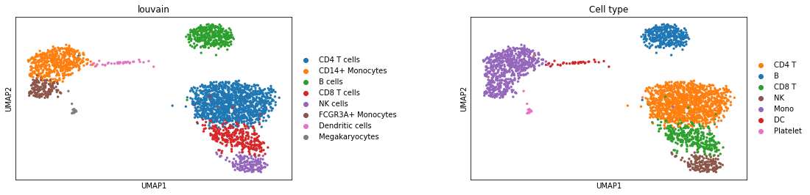

CLUSTER INDEPENDENT ANNOTATION
Introduction
Cluster Independent Annotation (CIA) is a classification method meant to help researchers in the cluster annotation step of scRNA-seq experiments. Exploiting two functions, given cell type signatures as input, this classifier computes a signature score for each cell (signature_score) and (with different modalities) it compares the score values in order to assign a label to each single cell (signature_based_classification).
This tool provides several advantages:
It synthesizes the information of a whole signature expression in a single score value, skipping the tedious one by one inspection of marker genes taken from long differentially expressed genes (DEGs) lists, which furthermore may not be cluster specific when taken singularly.
It provides a classification for each cell that is completely independent from clustering, thus, it can be used in parallel with a clustering method in order to set a proper resolution value, obtaining so coherent and easy to annotate cell groups.
Given the implemented modalities, it can be very fast and classify a huge dataset (hundreds of thousands cell) in a bunch of seconds, or it can be statistically more reliable exploiting the comparison of obtained signature scores with randomic signature ones. Since the latter method is of course computationally heavier, we implemented the possibility to parallelize processes.
Being signature-based, this tool can provide information about any kind of gene list with a biological meaning, allowing also functional annotation.
Normalizing for the gene signature length, it enables the comparison of genesets with different length, spanning from tens to thousands genes (obviously with different significance).
CIA is composed by two main modules:
investigate: a module which contains the functions to compute signature scores and automatically annotate cells accordingly (functions: signature_score and signature_based_classification)
report: a module which contains the functions to visualize score distributions in cell groups and classification performances with respect to a reference annotation (functions: group_composition, classification_metrics, grouped_classification_metrics and grouped_distributions)
import numpy as np
import pandas as pd
import scanpy as sc
import seaborn as sns
import multiprocessing
from functools import partial
from scipy.sparse import issparse
from scipy import sparse
import time
from sklearn import metrics
from scipy import sparse
import itertools
from cia import investigate, report, utils
import warnings
warnings.filterwarnings('ignore')
Description
In this tutorial is shown a representative workflow in which we exploited CIA functions to automatically annotatePBMC3KscRNA-seq datasets at cellular level starting from a set of gene signatures extracted from a PBMC atlasobained with CITE-seq method.

datasets.png
Our method requires as input an AnnData object with a raw expression matrix (AnnData.raw.X) and a dictionary containing the names of the signatures (e.g. cell type, cell state …) as keys and correspondent gene names as values. With the intent of standardize the analysis, we strongly suggest to use AnnData objects preprocessed following those Scanpy tutorial steps:
standard filtering on cells and genes.
setting normalized and logarithmized raw gene expression values as .raw attribute.
subsetting the AnnData with highly variable genes.
Extracting gene signatures from PBMC atlas
For demonstration purposes, we decided to use as signatures the DEGs of Hao et al 2021 [1] PBMC atlas. This dataset clusters have been confidently annotated exploiting “weighted-nearest neighbor” framework, an integrative analysis which takes into account both RNA and protein level information. This approach ensures that the extracted gene lists (RNA based only) are actually associated to a specific cell type.
# to copy and gunzip the data
!cp ./data/atlas.h5ad.gz ./data/copy_atlas.h5ad.gz
!gunzip ./data/copy_atlas.h5ad.gz
# to read the atlas data
atlas= sc.read('./data/copy_atlas.h5ad')
atlas
AnnData object with n_obs × n_vars = 161764 × 20729
obs: 'nCount_ADT', 'nFeature_ADT', 'nCount_RNA', 'nFeature_RNA', 'orig.ident', 'lane', 'donor', 'time', 'celltype.l1', 'celltype.l2', 'celltype.l3', 'Phase', 'nCount_SCT', 'nFeature_SCT', 'Cell type'
var: 'features'
uns: 'celltype.l1_colors', 'celltype.l2_colors', 'celltype.l3_colors', 'neighbors'
obsm: 'X_apca', 'X_aumap', 'X_pca', 'X_spca', 'X_umap', 'X_wnn.umap'
varm: 'PCs', 'SPCA'
obsp: 'distances'
# to remove the gunzipped data
!rm ./data/copy_atlas.h5ad
# to check if atlas.X is a count matrix
atlas.X.todense()
matrix([[0., 1., 0., ..., 0., 0., 0.],
[0., 0., 0., ..., 0., 0., 0.],
[0., 0., 0., ..., 0., 0., 0.],
...,
[0., 1., 0., ..., 0., 0., 0.],
[0., 0., 1., ..., 0., 0., 0.],
[0., 0., 0., ..., 0., 0., 0.]])
# to normalize the data
sc.pp.normalize_total(atlas, target_sum=1e4)
sc.pp.log1p(atlas)
# to set AnnData.raw attribute
atlas.raw= atlas
This dataset has been annotated at 3 different levels of granularity. We focused on the coarser one, both for visualization purposes and to facilitate the comparisons with other datasets annotated at lower resolution.
sc.pl.umap(atlas, color='celltype.l1')

sc.pl.umap(atlas, color=['celltype.l2', 'celltype.l3'], wspace=1)

Since labels ‘other’ and ‘other T’ don’t refer to any cell type in particular, we checked their identity in the higher resolution annotation.
ax=sc.pl.umap(atlas, show=False )
sc.pl.umap(atlas[(atlas.obs['celltype.l2']=='gdT') | (atlas.obs['celltype.l2']=='MAIT') |
(atlas.obs['celltype.l2']=='dnT') | (atlas.obs['celltype.l2']=='Platelet')], color='celltype.l2', ax=ax)
‘other T’ cluster is composed by double negative T cells, gamma delta T cells and MAIT cells. Those cells are not annotaded in PBMC3K, therefore there is no way to determine wether their eventual finding is correct or not. Since our intent is to use PBMC3K as test dataset, we removed ‘other T’ cells from the analysis. ‘other’ cluster is mainly composed by platelets and for this reason has been renamed ‘Platelet’.
# to remove 'other T' cells
atlas=atlas[atlas.obs['celltype.l1']!='other T']
atlas.obs['Cell type']=atlas.obs['celltype.l1']
# to rename clusters
atlas.obs['Cell type']=atlas.obs['Cell type'].cat.rename_categories(['B', 'CD4 T', 'CD8 T', 'DC', 'Mono', 'NK', 'Platelet'])
atlas.uns['Cell type_colors']=['#1f77b4', '#ff7f0e', '#2ca02c', '#d62728', '#9467bd', '#8c564b', '#e377c2']
atlas.obs['Cell type'].cat.categories
Trying to set attribute .obs of view, copying.
Index(['B', 'CD4 T', 'CD8 T', 'DC', 'Mono', 'NK', 'Platelet'], dtype='object')
We performed differential expression analysis (DEA) on coarser resoluted clusters and we selected as DEGs genes having at least 1.5 log2FC, with minimal mean of expression 0.25, z score 5 and at least expressed in 40% of cells within the cluster, in order to obtain shorter but more specific gene lists than a usual DEA.
sc.tl.rank_genes_groups(atlas, groupby='Cell type')
WARNING: Default of the method has been changed to 't-test' from 't-test_overestim_var'
# to filter differentially express genes with cia.utils.filter_degs()
gmt=utils.filter_degs(atlas, groupby='Cell type', uns_key='rank_genes_groups', logFC=1.5, scores=5, perc=40,
mean=0.25, direction='up')
for i in gmt.keys():
print(i + ' signature has '+ str(len(gmt[i])) +' genes')
B signature has 115 genes
CD4 T signature has 43 genes
CD8 T signature has 22 genes
DC signature has 156 genes
Mono signature has 674 genes
NK signature has 130 genes
Platelet signature has 132 genes
We then assessed the overlap among lists and, despite the stringent DEA , we found that CD8 T and CD4 T cells signatures show a similarity that is remarkably higher than similarities among all the other signatures (50% of DEGs shared with CD4 T). The authors themselves claimed that those populations are difficult to be effectively discriminated by scRNA-seq alone, in particular CD8 T and CD4 T cells. Citing them “We found that for CD8+ T cells, the most similar RNA neighbors often reflected a mix of CD8+ and CD4+ T cells (in the RNA KNN graph, there are a total of 944 incorrect edges that connect CD8+ to CD4+ T cells). By contrast, protein neighbors were predominantly correctly identified as CD8+ T cells (in the protein KNN graph, 12 CD8+/CD4+ edges were identified)” [1]. For this reason we can’t consider those signatures completely specific and so we don’t expect to obtain an ideal classification for those cell types.
# to check gene lists similarity with cia.utils.signatures_similarity()
utils.signatures_similarity(gmt, show='%')
| B | CD4 T | CD8 T | DC | Mono | NK | Platelet | |
|---|---|---|---|---|---|---|---|
| B | 100.00 | 2.33 | 0.00 | 15.38 | 2.23 | 0.77 | 1.52 |
| CD4 T | 0.87 | 100.00 | 50.00 | 0.00 | 0.00 | 0.00 | 0.00 |
| CD8 T | 0.00 | 25.58 | 100.00 | 0.00 | 0.00 | 3.85 | 0.76 |
| DC | 20.87 | 0.00 | 0.00 | 100.00 | 9.20 | 1.54 | 3.03 |
| Mono | 13.04 | 0.00 | 0.00 | 39.74 | 100.00 | 3.08 | 16.67 |
| NK | 0.87 | 0.00 | 22.73 | 1.28 | 0.59 | 100.00 | 4.55 |
| Platelet | 1.74 | 0.00 | 4.55 | 2.56 | 3.26 | 4.62 | 100.00 |
Since signature refinement is not the intent of this package and of this tutorial, and it should be done before the annotation/classification step, we proceeded using the above described signatures to show the usages of the proposed functions, and to report the automatic annotation performances.
Test dataset
In order to evaluate both the consistency of our method and the performances of classification, we used the PMBC atlas DEGs to automatically annotate the PBMC3K dataset from Satija et al. 2015 [3]. This dataset was annotated by the authors relying on clustering and marker genes expression inspection and it is widely used as reference in the scientific community. We classified this dataset independently from the already present annotation, whose cell labels were used as ground truth to evaluate our classification perfomances with different modalities.
# to load the test dataset
pbmc3k=sc.read('data/pbmc3k.h5ad')
# to normalize and logarithmize the values
sc.pp.normalize_total(pbmc3k, target_sum=1e4)
sc.pp.log1p(pbmc3k)
# to set the .raw attribute
pbmc3k.raw=pbmc3k
# to compute HVG
sc.pp.highly_variable_genes(pbmc3k, min_mean=0.0125, max_mean=3, min_disp=0.5)
# to subset features
pbmc3k=pbmc3k[:, pbmc3k.var.highly_variable]
pbmc3k
View of AnnData object with n_obs × n_vars = 2638 × 1838
obs: 'n_genes', 'percent_mito', 'n_counts', 'louvain', 'Cell type'
var: 'n_cells', 'highly_variable', 'means', 'dispersions', 'dispersions_norm'
uns: 'Cell type_colors', 'neighbors', 'log1p', 'hvg'
obsm: 'X_draw_graph_fr', 'X_pca', 'X_tsne', 'X_umap'
obsp: 'connectivities', 'distances'
For the classification of the test dataset we renamed and merged some clusters in order to make easier the comparison and the visualization of results. In particular, ‘CD14+ Monocytes’ and ‘FCGR3A+ Monocytes’ clusters were merged into ‘Mono’.
sc.pl.umap(pbmc3k, color=['louvain','Cell type'], wspace=0.5)
Trying to set attribute ._uns of view, copying.
Signature score
signature_score function is based on “gene signature score” calculation method shown in Della Chiara, Gervasoni, Fakiola, Godano et al. 2021 [2].
Given \({\bf{X}_{C}}=\{{X}_{1},{X}_{2},\ldots ,{X}_{n}\}:{X}_{i}>0\), a vector of positive gene expression values for cell \({\bf{C}}\), and given \({\bf{S}}=\{{G}_{1},{G}_{2},\ldots ,{G}_{L}\}\), a list of gene symbols of length \({\bf{L}}\), the gene signature score of is defined as:
\({\bf{GSS(C)}}=\frac{{n}}{L}\frac{{\sum }^L_{i=1}{\bf{X}}i}{{\sum}^n_{j=1}{\bf{X}j}}\)
With this score it is possible to condensate in a single value both the proportion of expressed signature genes and their overall expression, enabling researchers to easily study whole signatures expression at single cell level.
Raw score
The raw score is the very same score described in the above mentioned paper, it’s the default score_mode in signature_score function.
investigate.signature_score(data=pbmc3k, signatures_dict=gmt, score_mode='raw')
Checking for genes not in AnnData.raw.var_names ...
14/115 of "B" signature genes were removed since they are not in AnnData.raw.var_names
3/43 of "CD4 T" signature genes were removed since they are not in AnnData.raw.var_names
2/22 of "CD8 T" signature genes were removed since they are not in AnnData.raw.var_names
5/156 of "DC" signature genes were removed since they are not in AnnData.raw.var_names
25/674 of "Mono" signature genes were removed since they are not in AnnData.raw.var_names
4/130 of "NK" signature genes were removed since they are not in AnnData.raw.var_names
9/132 of "Platelet" signature genes were removed since they are not in AnnData.raw.var_names
Computing raw signature scores ...
"B" added in Anndata.obs
"CD4 T" added in Anndata.obs
"CD8 T" added in Anndata.obs
"DC" added in Anndata.obs
"Mono" added in Anndata.obs
"NK" added in Anndata.obs
"Platelet" added in Anndata.obs
Signature scores are stored by default in AnnData.obs, adding a column for each signature named accordingly to the signature name.
pbmc3k.obs[gmt.keys()]
| B | CD4 T | CD8 T | DC | Mono | NK | Platelet | |
|---|---|---|---|---|---|---|---|
| index | |||||||
| AAACATACAACCAC-1 | 0.001613 | 0.005325 | 0.006661 | 0.000675 | 0.005526 | 0.006314 | 0.002356 |
| AAACATTGAGCTAC-1 | 0.020164 | 0.001019 | 0.000489 | 0.006552 | 0.013895 | 0.003540 | 0.005919 |
| AAACATTGATCAGC-1 | 0.000551 | 0.010599 | 0.002914 | 0.000622 | 0.008131 | 0.003550 | 0.004517 |
| AAACCGTGCTTCCG-1 | 0.003013 | 0.000082 | 0.000165 | 0.006363 | 0.044171 | 0.003155 | 0.006048 |
| AAACCGTGTATGCG-1 | 0.000454 | 0.000392 | 0.003250 | 0.002069 | 0.002695 | 0.028752 | 0.002484 |
| ... | ... | ... | ... | ... | ... | ... | ... |
| TTTCGAACTCTCAT-1 | 0.004509 | 0.000066 | 0.000132 | 0.015625 | 0.060052 | 0.003075 | 0.005499 |
| TTTCTACTGAGGCA-1 | 0.006708 | 0.001824 | 0.000032 | 0.002977 | 0.010363 | 0.002241 | 0.004388 |
| TTTCTACTTCCTCG-1 | 0.022383 | 0.000654 | 0.000000 | 0.006210 | 0.007250 | 0.000737 | 0.001222 |
| TTTGCATGAGAGGC-1 | 0.015087 | 0.000048 | 0.000000 | 0.004027 | 0.005166 | 0.001889 | 0.001102 |
| TTTGCATGCCTCAC-1 | 0.001351 | 0.008759 | 0.003322 | 0.000776 | 0.003832 | 0.001040 | 0.005636 |
2638 rows × 7 columns
Alternatively, signature scores can be directly returned as an array by specifying return_array=True.
investigate.signature_score(data=pbmc3k, signatures_dict=gmt, score_mode='raw', return_array=True)
14/115 of "B" signature genes were removed since they are not in AnnData.raw.var_names
3/43 of "CD4 T" signature genes were removed since they are not in AnnData.raw.var_names
2/22 of "CD8 T" signature genes were removed since they are not in AnnData.raw.var_names
5/156 of "DC" signature genes were removed since they are not in AnnData.raw.var_names
25/674 of "Mono" signature genes were removed since they are not in AnnData.raw.var_names
4/130 of "NK" signature genes were removed since they are not in AnnData.raw.var_names
9/132 of "Platelet" signature genes were removed since they are not in AnnData.raw.var_names
array([[1.61271840e-03, 5.32459784e-03, 6.66090776e-03, ...,
5.52562313e-03, 6.31357930e-03, 2.35635833e-03],
[2.01640872e-02, 1.01911682e-03, 4.89214063e-04, ...,
1.38954993e-02, 3.54014299e-03, 5.91941593e-03],
[5.50757633e-04, 1.05985086e-02, 2.91369013e-03, ...,
8.13105374e-03, 3.54984899e-03, 4.51662991e-03],
...,
[2.23828926e-02, 6.53903419e-04, 0.00000000e+00, ...,
7.25031163e-03, 7.37115031e-04, 1.22186735e-03],
[1.50866892e-02, 4.79971059e-05, 0.00000000e+00, ...,
5.16614134e-03, 1.88920512e-03, 1.10187375e-03],
[1.35067629e-03, 8.75875577e-03, 3.32235992e-03, ...,
3.83193033e-03, 1.04008169e-03, 5.63590560e-03]])
Scaled score
Scaled score is the raw score divided by max score value for that given signature, operation which rescales the values from 0 to 1. Scaled scores of different signatures, with different length, can thus be directly compared. To compute the ‘scaled’ score, score_mode must be set as ‘scaled’.
To assess the capability of extracted signatures to discriminate cell types, we compared scaled score distributions.
investigate.signature_score(data=atlas, signatures_dict=gmt, score_mode='scaled')
Checking for genes not in AnnData.raw.var_names ...
All signature genes are in AnnData.raw.var_names
Computing scaled signature scores ...
"B" added in Anndata.obs
"CD4 T" added in Anndata.obs
"CD8 T" added in Anndata.obs
"DC" added in Anndata.obs
"Mono" added in Anndata.obs
"NK" added in Anndata.obs
"Platelet" added in Anndata.obs
sc.pl.umap(atlas, color='Cell type')
By inspecting the score values, for all the signatures, the highest values are found in the proper cluster, indicating the sensitivity of the signatures and the capability of the signature score to represent the expression of the whole gene lists.
sc.pl.umap(atlas, color=gmt.keys(), color_map='Reds')

CD4 T and CD8 T scores, as expected, show an overlap reflecting their similarity. In particular both signatures are highly expressed in CD8 naive subcluster.
ax=sc.pl.umap(atlas, show=False )
sc.pl.umap(atlas[(atlas.obs['celltype.l2']=='CD8 Naive')], color='celltype.l2', ax=ax)
Inspecting the violin plots showing the distribution of score values, as expected, it seems that there is a cluster in which values are higher than all the others for each signature.
sc.pl.violin(pbmc3k, keys=gmt.keys(), groupby='Cell type')

To better viusualize those distributions, we exploited grouped_distributions. By selecting AnnData.obs columns containing signature scores, this function plots a heatmap showing the medians of their values in cell groups (each of the above shown violin plot information is condensed in a heatmap column) and it prints a statistical report. For each cell group, a two-sided Wilcoxon test is perfomed to evaluate if the distribution with the highest median is different from the others. For each signature, a two-sided Mann-Whitney U test is performed to evaluate if the distribution in the cell group having the highest median is different from the other groups distributions.
report.grouped_distributions(atlas, groups_obs='Cell type', columns_obs=gmt.keys(), scale_medians='column-wise', cmap='Reds')
Performing Wilcoxon test on each cell group ...
For each cell group there is a distribution significantly higher than the others (p<0.01)
Performing Mann-Whitney U test on each selected AnnData.obs column ...
For each distribution, there is only a cell group in which values are higher with respect to all the other groups (p<0.01)
The statistical tests confirmed that the visible differences in signature score distributions are significant, indicating that scaled signature scores are consistent with authors annotation. With the evidence of the goodness of the signatures, we proceeded with the classification of PBMC3K.
Signature-based classification
To classify the test dataset we used signature_based_classification. Two main classification modalities have been implemented: a fast classification mode, in which scaled scores are directly computed and compared, and a FC score-based mode that, relying on the comparison between raw signature scores and randomic signature scores, can provide a more confident classification at the cost of computation time.
Fast classification
Fast classification is performed by assigning to each cell the label of the signature with the max scaled score value. Being based on matrices and vectors operations, this computation is very fast (the 161764 cells of the PBMC atlas were classified with the high-performance computing server infrastructure of our institute in nearby 22s).
To counteract the transcriptional similarity between CD4 T and CD8 T cells we used the population-defining key genes expression as negative markers (CD8A and CD8B for CD4 T cells; CD4 for CD8 T cells).
neg={'CD8 T':['CD4'], 'CD4 T':['CD8A', 'CD8B']}
By assigning neg dictionary to negative_markers paramaters, a scaled score is computed for both CD8 T and CD4 T negative markers, inverted (score= 1-score) and multiplied by corresponding signature values.
investigate.signature_based_classification(data=pbmc3k, signatures_dict=gmt, negative_markers=neg,
fast_mode=True, obs_name='Prediction fast mode')
14/115 of "B" signature genes were removed since they are not in AnnData.raw.var_names
3/43 of "CD4 T" signature genes were removed since they are not in AnnData.raw.var_names
2/22 of "CD8 T" signature genes were removed since they are not in AnnData.raw.var_names
5/156 of "DC" signature genes were removed since they are not in AnnData.raw.var_names
25/674 of "Mono" signature genes were removed since they are not in AnnData.raw.var_names
4/130 of "NK" signature genes were removed since they are not in AnnData.raw.var_names
9/132 of "Platelet" signature genes were removed since they are not in AnnData.raw.var_names
Checking for genes not in AnnData.raw.var_names ...
All signature genes are in AnnData.raw.var_names
Computing scaled signature scores ...
"CD8 T_negative" added in Anndata.obs
"CD4 T_negative" added in Anndata.obs
Classification labels added in AnnData.obs["Prediction fast mode"]
Runtime of the process is 0.32 s
'Fast classification complete!'
sc.pl.umap(pbmc3k, color=gmt, cmap='Reds')
... storing 'Prediction fast mode' as categorical
report.grouped_distributions(pbmc3k, groups_obs='Cell type', columns_obs=['CD4 T', 'B', 'CD8 T', 'NK', 'Mono', 'DC', 'Platelet'], scale_medians='column-wise', cmap='Reds')
Performing Wilcoxon test on each cell group ...
WARNING in cell group DC: DC values are not significantly different from Mono values.
Performing Mann-Whitney U test on each selected AnnData.obs column ...
For each distribution, there is only a cell group in which values are higher with respect to all the other groups (p<0.01)
Also for PBMC3K, for each signature, there is a cluster in which scores are significantly higher than all the others. This confirmed the consistency of the signatures across datasets and suggested that the scaled score could be per se sufficient to help researchers in an eventual annotation, permitting to skip the one-by-one evaluation of DEGs reported in literature as marker genes.
By inspecting and comparing the ground truth and the predicted labels is evident that the vast majority of the cells was correctly classified.
pbmc3k.uns['Prediction fast mode_colors']=['#1f77b4', '#ff7f0e', '#2ca02c', '#d62728', '#9467bd', '#8c564b', '#e377c2']
sc.pl.umap(pbmc3k, color=['Cell type','Prediction fast mode'], wspace=0.5)
report.group_composition(pbmc3k, classification_obs='Prediction fast mode', groups_obs='Cell type',
columns_order=['CD4 T', 'B', 'CD8 T', 'NK', 'Mono', 'DC', 'Platelet'], cmap='Greens')
FC score-based classification
FC score-based classification is performed by looking for the max Fold Change score value for each cell instead of scaled score one. FC score is computed by dividing the raw signatue score by the median of raw scores of a given number (n_iter) of randomic signatures. To generate randomic signatures, all genes of the dataset are ranked by their mean expression and are assigned to a given bin, and for each signature gene a randomic gene of the same expression bin is taken.
Standard mode
Standard mode is performed with default parameters: all the FC scores lower than 1 (randomic score < signature score) are turned into 0, and if a cell has a FC score equal to 0 for all the signature it will not be assigned to any cell type. This approach is slower with respect to fast mode and it could be affected by a decrease of performances due to unassigned cells, but in this way the classified cells are labelled with an higher confidence and cells with low FCs (e.g. not fully differentiated) are not forced to be classified. To speed-up the process it’s possible to parallelize the computations allocating jobs to a given number of processors (n_proc). By setting new_score=‘FC’, raw scores in AnnData.obs can be replaced by FC values.
investigate.signature_based_classification(data=pbmc3k, signatures_dict=gmt, negative_markers=neg,
n_iter=500, n_proc=32,new_score='FC', obs_name='Prediction standard mode', FC_threshold= 1, n_bins=25)
Checking for genes not in AnnData.raw.var_names ...
14/115 of "B" signature genes were removed since they are not in AnnData.raw.var_names
3/43 of "CD4 T" signature genes were removed since they are not in AnnData.raw.var_names
2/22 of "CD8 T" signature genes were removed since they are not in AnnData.raw.var_names
5/156 of "DC" signature genes were removed since they are not in AnnData.raw.var_names
25/674 of "Mono" signature genes were removed since they are not in AnnData.raw.var_names
4/130 of "NK" signature genes were removed since they are not in AnnData.raw.var_names
9/132 of "Platelet" signature genes were removed since they are not in AnnData.raw.var_names
Computing raw signature scores ...
"B" added in Anndata.obs
"CD4 T" added in Anndata.obs
"CD8 T" added in Anndata.obs
"DC" added in Anndata.obs
"Mono" added in Anndata.obs
"NK" added in Anndata.obs
"Platelet" added in Anndata.obs
raw scores are being replaced by Fold Change signature scores ...
Checking for genes not in AnnData.raw.var_names ...
All signature genes are in AnnData.raw.var_names
Computing scaled signature scores ...
"CD8 T_negative" added in Anndata.obs
"CD4 T_negative" added in Anndata.obs
Classification labels added in AnnData.obs["Prediction standard mode"]
Results have been stored in AnnData.uns["signature_based_classification"]
Runtime of the process is 6.33 min with 32 cores
Beside the possibility to substitute raw score values in AnnData.obs, by default both FC scores and filtered FC scores are stored in AnnData.uns.
df=pbmc3k.uns['signature_based_classification']
df=df.iloc[:, 7:14]
df.index=pbmc3k.obs.index
pbmc3k.obs[df.columns]=df
df
| B_filtered_FC | CD4 T_filtered_FC | CD8 T_filtered_FC | DC_filtered_FC | Mono_filtered_FC | NK_filtered_FC | Platelet_filtered_FC | |
|---|---|---|---|---|---|---|---|
| index | |||||||
| AAACATACAACCAC-1 | 0.000000 | 1.124789 | 4.570688 | 0.000000 | 0.000000 | 1.974376 | 0.000000 |
| AAACATTGAGCTAC-1 | 8.587371 | 0.000000 | 0.000000 | 2.184307 | 0.000000 | 0.000000 | 1.275801 |
| AAACATTGATCAGC-1 | 0.000000 | 3.751404 | 1.300559 | 0.000000 | 0.000000 | 0.000000 | 1.250395 |
| AAACCGTGCTTCCG-1 | 1.054793 | 0.000000 | 0.000000 | 2.191148 | 4.376160 | 0.000000 | 1.175615 |
| AAACCGTGTATGCG-1 | 0.000000 | 0.000000 | 2.333642 | 1.637132 | 0.000000 | 14.788568 | 1.143168 |
| ... | ... | ... | ... | ... | ... | ... | ... |
| TTTCGAACTCTCAT-1 | 1.252642 | 0.000000 | 0.000000 | 4.103183 | 4.395255 | 0.000000 | 0.000000 |
| TTTCTACTGAGGCA-1 | 3.959939 | 0.000000 | 0.000000 | 1.430574 | 0.000000 | 0.000000 | 1.403503 |
| TTTCTACTTCCTCG-1 | 26.878841 | 0.000000 | 0.000000 | 4.985177 | 0.000000 | 0.000000 | 0.000000 |
| TTTGCATGAGAGGC-1 | 15.592578 | 0.000000 | 0.000000 | 2.928368 | 0.000000 | 0.000000 | 0.000000 |
| TTTGCATGCCTCAC-1 | 0.000000 | 5.751529 | 2.344116 | 0.000000 | 0.000000 | 0.000000 | 2.392587 |
2638 rows × 7 columns
filtered_FC_pbmc3k=['CD4 T_filtered_FC','B_filtered_FC','CD8 T_filtered_FC','NK_filtered_FC',
'Mono_filtered_FC','DC_filtered_FC','Platelet_filtered_FC']
By inspecting the distributions of filtered FC scores, it is even more evident that each signature is preferentially expressed by one cell group.
report.grouped_distributions(pbmc3k, columns_obs=filtered_FC_pbmc3k, groups_obs='Cell type', cmap='Reds',
scale_medians='column-wise')
Performing Wilcoxon test on each cell group ...
For each cell group there is a distribution significantly higher than the others (p<0.01)
Performing Mann-Whitney U test on each selected AnnData.obs column ...
For each distribution, there is only a cell group in which values are higher with respect to all the other groups (p<0.01)
Indeed, the majority of each cell group has been correctly classified.
pbmc3k.uns['Prediction standard mode_colors']=['#1f77b4','#ff7f0e','#2ca02c','#d62728','#9467bd','#8c564b','#e377c2','#bcbd22']
sc.pl.umap(pbmc3k,color=['Cell type', 'Prediction standard mode'])
... storing 'Prediction standard mode' as categorical
report.group_composition(pbmc3k, classification_obs='Prediction standard mode', groups_obs='Cell type',
columns_order=['CD4 T', 'B', 'CD8 T', 'NK', 'Mono', 'DC', 'Platelet'], cmap='Greens')
No major differences have been detected between fast and standard classification in both datasets, suggesting a per se validity of scaled score to perform a fast explorative cell type prediction.
Quantile-based filtering mode
Quantile-based filter adds another layer of stringency to the classification by acting on FC distributions. By setting q equal to a number from 0 to 1, all the FC score values below that given quantile are set 0. In this way only the highest values of FC are mainteined and so only the most signature-expressing cells will be classified. This could be very useful in case of bimodal distribution of score values or when a signature is moderately expressed in all the clusters.
investigate.signature_based_classification(data=pbmc3k, signatures_dict=gmt, negative_markers=neg,
n_iter=500, n_proc=32, obs_name='Prediction q', q=0.50, n_bins=25)
Checking for genes not in AnnData.raw.var_names ...
14/115 of "B" signature genes were removed since they are not in AnnData.raw.var_names
3/43 of "CD4 T" signature genes were removed since they are not in AnnData.raw.var_names
2/22 of "CD8 T" signature genes were removed since they are not in AnnData.raw.var_names
5/156 of "DC" signature genes were removed since they are not in AnnData.raw.var_names
25/674 of "Mono" signature genes were removed since they are not in AnnData.raw.var_names
4/130 of "NK" signature genes were removed since they are not in AnnData.raw.var_names
9/132 of "Platelet" signature genes were removed since they are not in AnnData.raw.var_names
Computing raw signature scores ...
"B" added in Anndata.obs
"CD4 T" added in Anndata.obs
"CD8 T" added in Anndata.obs
"DC" added in Anndata.obs
"Mono" added in Anndata.obs
"NK" added in Anndata.obs
"Platelet" added in Anndata.obs
Checking for genes not in AnnData.raw.var_names ...
All signature genes are in AnnData.raw.var_names
Computing scaled signature scores ...
"CD8 T_negative" added in Anndata.obs
"CD4 T_negative" added in Anndata.obs
Classification labels added in AnnData.obs["Prediction q"]
Results have been stored in AnnData.uns["signature_based_classification"]
Runtime of the process is 6.37 min with 32 cores
pbmc3k.uns['Prediction q_colors']=['#1f77b4', '#ff7f0e', '#2ca02c', '#d62728', '#9467bd', '#8c564b', '#e377c2', '#bcbd22']
sc.pl.umap(pbmc3k,color=['Cell type', 'Prediction q'])
... storing 'Prediction q' as categorical
df=pbmc3k.uns['signature_based_classification']
df=df.iloc[:, 7:14]
df.index=pbmc3k.obs.index
pbmc3k.obs[df.columns]=df
report.grouped_distributions(pbmc3k, columns_obs=filtered_FC_pbmc3k, groups_obs='Cell type', cmap='Reds', scale_medians='column-wise')
Performing Wilcoxon test on each cell group ...
For each cell group there is a distribution significantly higher than the others (p<0.01)
Performing Mann-Whitney U test on each selected AnnData.obs column ...
For each distribution, there is only a cell group in which values are higher with respect to all the other groups (p<0.01)
report.group_composition(pbmc3k, classification_obs='Prediction q', groups_obs='Cell type',
columns_order=['CD4 T', 'B', 'CD8 T', 'NK', 'Mono', 'DC', 'Platelet'], cmap='Greens')
Again, no major differences have been found, indicating the consistency of the signatures. As expected, the clusters with the highest variability are CD8 T and CD4 T, which, as mentioned before, have aspecific signatures.
p value-based filtering mode
The most stringent level of classification is given by p-val mode. As mentioned before, FC score is obtained by dividing raw signature scores for the median of scores of n_iter * randomic signatures. For each signature, for each cell, a p-value is calculated by counting how many times random signature values are higher than gene signature one (all divided by n_inter). If p value is higher than the set p parameter, the FC score of that cell for that signature will become 0. In this way only the significantly signature-expressing cells will be assigned.
investigate.signature_based_classification(data=pbmc3k, signatures_dict=gmt, negative_markers=neg,
n_iter=500, n_proc=32, obs_name='Prediction p-val', p=0.05, n_bins=25, new_score='FC')
Checking for genes not in AnnData.raw.var_names ...
14/115 of "B" signature genes were removed since they are not in AnnData.raw.var_names
3/43 of "CD4 T" signature genes were removed since they are not in AnnData.raw.var_names
2/22 of "CD8 T" signature genes were removed since they are not in AnnData.raw.var_names
5/156 of "DC" signature genes were removed since they are not in AnnData.raw.var_names
25/674 of "Mono" signature genes were removed since they are not in AnnData.raw.var_names
4/130 of "NK" signature genes were removed since they are not in AnnData.raw.var_names
9/132 of "Platelet" signature genes were removed since they are not in AnnData.raw.var_names
Computing raw signature scores ...
"B" added in Anndata.obs
"CD4 T" added in Anndata.obs
"CD8 T" added in Anndata.obs
"DC" added in Anndata.obs
"Mono" added in Anndata.obs
"NK" added in Anndata.obs
"Platelet" added in Anndata.obs
raw scores are being replaced by Fold Change signature scores ...
Checking for genes not in AnnData.raw.var_names ...
All signature genes are in AnnData.raw.var_names
Computing scaled signature scores ...
"CD8 T_negative" added in Anndata.obs
"CD4 T_negative" added in Anndata.obs
Classification labels added in AnnData.obs["Prediction p-val"]
Results have been stored in AnnData.uns["signature_based_classification"]
Runtime of the process is 6.44 min with 32 cores
pbmc3k.uns['Prediction p-val_colors']=['#1f77b4','#ff7f0e','#2ca02c','#d62728','#9467bd','#8c564b','#e377c2','#bcbd22']
sc.pl.umap(pbmc3k, color=['Cell type','Prediction p-val'])
... storing 'Prediction p-val' as categorical
sc.pl.umap(pbmc3k, color=filtered_FC_pbmc3k, cmap='Reds')
df=pbmc3k.uns['signature_based_classification']
df=df.iloc[:, 7:14]
df.index=pbmc3k.obs.index
pbmc3k.obs[df.columns]=df
report.grouped_distributions(pbmc3k, columns_obs=filtered_FC_pbmc3k, groups_obs='Cell type', cmap='Reds', scale_medians='column-wise')
Performing Wilcoxon test on each cell group ...
For each cell group there is a distribution significantly higher than the others (p<0.01)
Performing Mann-Whitney U test on each selected AnnData.obs column ...
For each distribution, there is only a cell group in which values are higher with respect to all the other groups (p<0.01)

report.group_composition(pbmc3k, classification_obs='Prediction p-val', groups_obs='Cell type',
columns_order=['CD4 T', 'B', 'CD8 T', 'NK', 'Mono', 'DC', 'Platelet', 'Unassigned'], cmap='Greens')
Again, no major differences were found with the statistically relevant p value mode, suggesting the consistency of our classification method.
Classification performance evaluation
To evaluate classification performances both per grond truth cluster and overall we exploited respectively grouped_classification_metrics and classification_metrics functions.
In both functions cell labels assigned by CIA and the annotation already present in test datasets are compared in order to count true positive (TP), true negative (TN), false positive (FP) and false negative (FN) cells for each cluster. Only for the overall calculation the per-cluster counts are summed to obtain the total TN, TP, FN and FP.
Then, again for both functions, the following metriacs are calculated: - Sensitivity (SE)= TP/(TP+FN) - Specificity (SP)= TN/(TN+FP) - Precision (PR)= TP/(TP+FP) - Accuracy (ACC)= (TN+TP)/(TN+TP+FN+FP) - F1-score (F1)= 2TP/(2TP+FN+FP)
N.B.: the column of the classification of interest and the one with ground truth labels must have the same categories to be compared.
Here, for clarity, we show only the per-cluster classification metrics of the statistically relevant p value-based method for both datasets.
report.grouped_classification_metrics(pbmc3k, classification_obs='Prediction p-val',groups_obs='Cell type')
| SE | SP | PR | ACC | F1 | |
|---|---|---|---|---|---|
| CD4 T | 0.739510 | 0.983936 | 0.972414 | 0.877938 | 0.840119 |
| B | 0.994152 | 0.995209 | 0.968661 | 0.995072 | 0.981241 |
| CD8 T | 0.731013 | 0.924203 | 0.567568 | 0.901061 | 0.639004 |
| NK | 0.980519 | 0.976248 | 0.719048 | 0.976497 | 0.829670 |
| Mono | 0.973016 | 0.996016 | 0.987118 | 0.990523 | 0.980016 |
| DC | 0.945946 | 0.993464 | 0.673077 | 0.992798 | 0.786517 |
| Platelet | 0.933333 | 0.990088 | 0.350000 | 0.989765 | 0.509091 |
And here are reported the overall perfomances of each classification modality:
report.classification_metrics(pbmc3k,
classification_obs=['Prediction fast mode', 'Prediction standard mode', 'Prediction q', 'Prediction p-val'],
groups_obs='Cell type')
| SE | SP | PR | ACC | F1 | |
|---|---|---|---|---|---|
| Prediction fast mode | 0.895375 | 0.982563 | 0.895375 | 0.970107 | 0.895375 |
| Prediction standard mode | 0.863912 | 0.977319 | 0.863912 | 0.961118 | 0.863912 |
| Prediction q | 0.866566 | 0.978014 | 0.867882 | 0.962092 | 0.867223 |
| Prediction p-val | 0.845337 | 0.979719 | 0.874167 | 0.960522 | 0.859511 |
Conclusions
Signature score is confirmed to be a powerful way to condensate the information of a whole gene signature expression at single cell level. The only differenceres from the expected score distributions were attributed to the high transcriptional similarity (reported by the authors themselves) of some PBMC atlas cell group (from which we extracted the signatures), which have been previously defined also exploiting protein level information. This further suggested the capability of this score to clearly highlight the goodness of the transcriptional signature itself.
Signature based classification resulted to be effective in the automatic annotation of scRNA-seq datasets with external signatures. In particular, considering the overall performances of CIA in the PBMC3K test dataset:
our method is able to rapidly classify a scRNA-seq dataset using independent gene signatures and known negative markers without any clustering step.
all the shown classification modalities annotated cells with good performances (lowest ACC: 96.03%, lowest F1:85.90%), suggesting that fast classification can be used as explorative analysis to infer cell idendity before a run with the more computationally intense FC-based mode.
In our package, besides the classification tool, we also implemented a module of functions which allow to easily compare classification methods and evaluate score distributions in cell groups (also obtained with other packages).